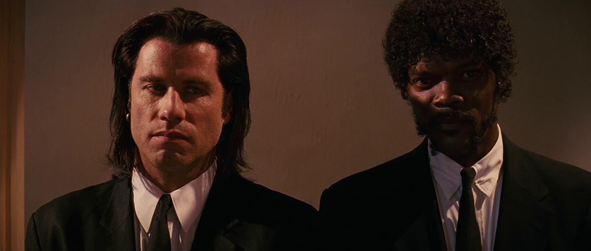

Pink Floyd are an English rock band formed in London in 1965.
Gaining an early following as one of the first British psychedelic groups, they were distinguished by their extended compositions,
sonic experiments, philosophical lyrics, and elaborate live shows.
Dec 3 • 4 min read • • Popular on Medium
Navoda Nilakshi
The role of magnetism in planetary formation
Magnetism affects the formation of planets, as shown by studies on Saturn and meteorites.
New perspectives thanks to space missions.
Dec 19 • 6 min read • • Based on your reading history
Divyesh Bhalani in GameCenter
Arthur Morgan and the infamous Van der Linde gang
Developed by the creators of Grand Theft Auto V and Red Dead Redemption,
Red Dead Redemption 2 is an epic tale of life in America's unforgiving heartland.
Nov 24 • 4 min read • • Popular on Medium
Vsevolod Ulyanovich in Sport&Finance
Juventus F.c. - Real time quotes
Discover quotes, technical analysis, interactive charts and the latest stock news.
Oct 29 • 6 min read • • Popular on Medium
Kolby Sisk in Entertainment
Pulp Fiction, history of a Cult
The lives of two mob hitmen, a boxer,
a gangster and his wife, and a pair of diner bandits intertwine in four tales of violence and redemption.
Dec 6 • 4 min read • • Popular on Medium

Arun Kashyap in MondoSport
How Verstappen won at Interlagos
Everything happens in the rain of Interlagos, wher Max Verstappen comes back from 17
and return to win after 10 races. The analysis
Jul 5 • 5 min read • • Selected for you
+
Discover Medium writers you already follow on Twitter